Survey Cleaner checks, cleans and releases survey data on your own computer. Nothing is uploaded. The work moves through 7 steps, and each step belongs to one person.
Who: the Cleaner sets the rules up and the Manager approves them. You describe what the questionnaire allows, and the app checks only what these rules say.
| Load rules template… | Reuse rules saved from an earlier wave (.json or Excel). |
| Save rules template | Save these rules to a file for the next wave. |
| Download rules as Excel | For long questionnaires: fill in the codes in Excel, then load the file back with Load rules template… |
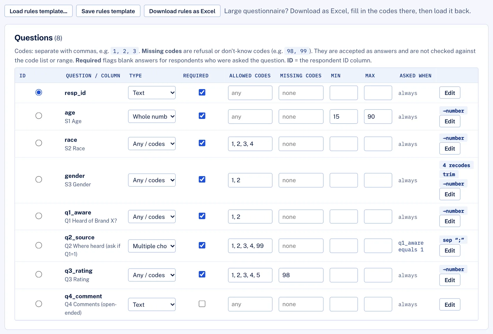
| ID | Choose the respondent ID column. There must be exactly one. |
| Type | What the answer should be: codes, text, number, whole number, date or multiple choice. |
| Required | Flags blank answers, but only for respondents who were asked the question. |
| Allowed codes | The valid answers, e.g. 1, 2, 3, 4. Anything else is flagged. |
| Missing codes | Refused or don't-know codes, e.g. 98, 99. They are accepted as answers. |
| Min / Max | The allowed range for numbers, e.g. age 15 to 90. |
| Asked when | A summary of the skip logic. You set it with Edit. |
| Edit | Opens more settings for one question. The small tags next to it show what is set, e.g. 4 recodes, trim. |
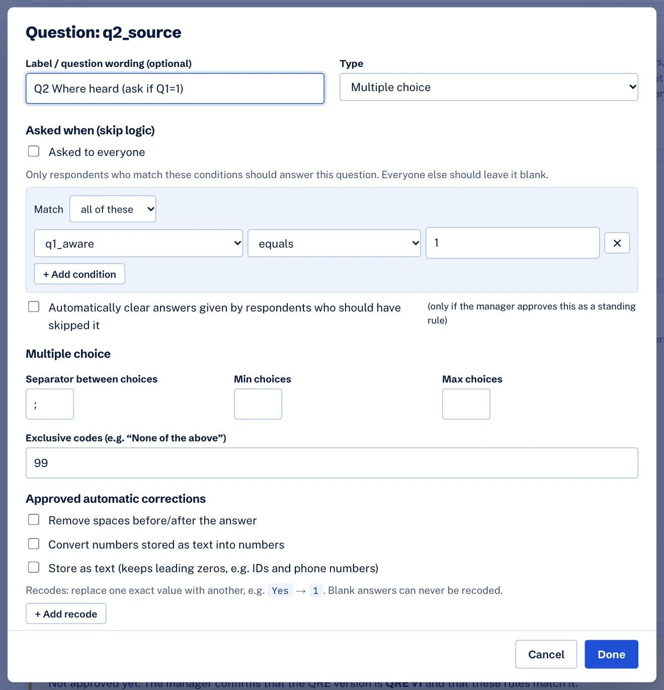
| Asked to everyone / + Add condition | Skip logic. Untick Asked to everyone and add the condition, e.g. q1_aware equals 1. Anyone else who answered Q2 is flagged. |
| Automatically clear answers… | Blanks answers from people who should have skipped the question. Tick it only if the manager approves this as a standing rule. |
| Multiple choice | Separator, minimum and maximum number of choices, and exclusive codes. Example: answers look like 1;3, and 99 (None of these) cannot be combined with another choice. |
| Approved automatic corrections | Remove spaces, convert numbers stored as text, or keep as text (e.g. phone numbers with a leading 0). Every change is logged. |
| + Add recode | Replace one exact value with another, e.g. Male → 1, F → 2. Blank answers are never filled in. |
| Done | Keeps your changes on screen. You still need to click Save rules. |
| Add eligibility rule / Change | Who counts as eligible, e.g. age is at least 18. Anyone who doesn't match is flagged, never removed automatically. Everyone is eligible clears the rule. |
| Add a check / Edit / Remove | Catches answers that contradict each other: “If … then … must be true”. |
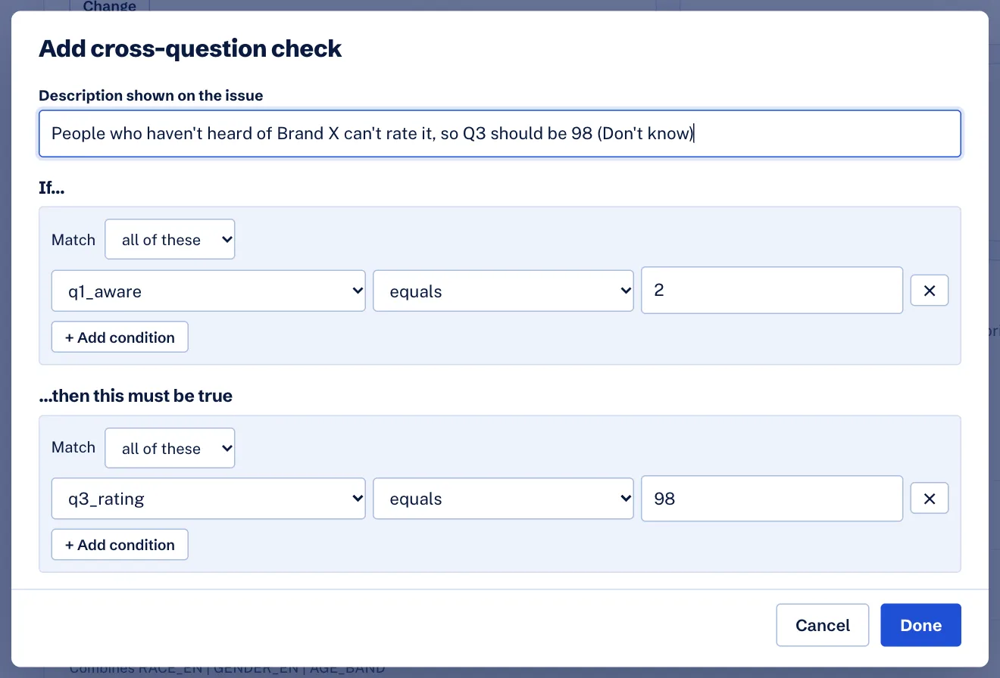
Tip: don't write a check for skip logic. Asked when already covers it, and a check on a skipped question can only give “unclear” results.
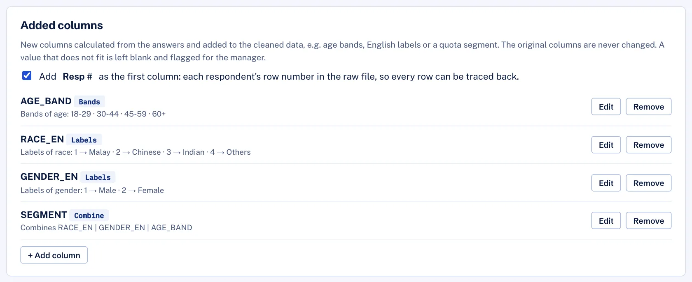
| Add Resp # (tickbox) | Adds each respondent's row number in the raw file as the first column, so any row can be traced back. On by default. |
| + Add column | Creates a new column of one of three kinds (below). |
| Edit / Remove | Change or delete an added column. |
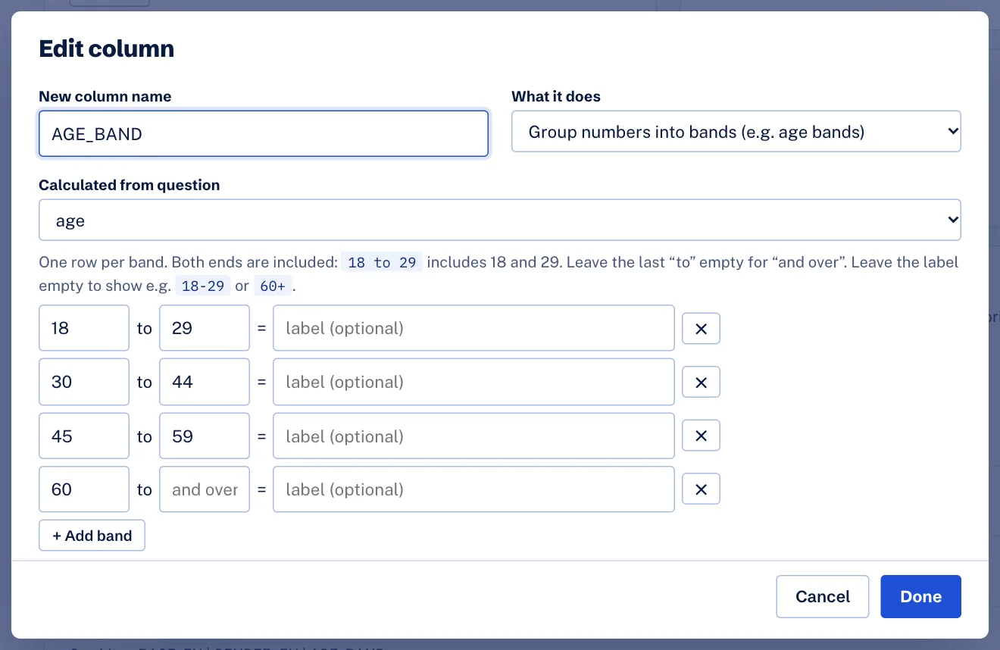
18-29. Leave the last “to” empty for “and over”.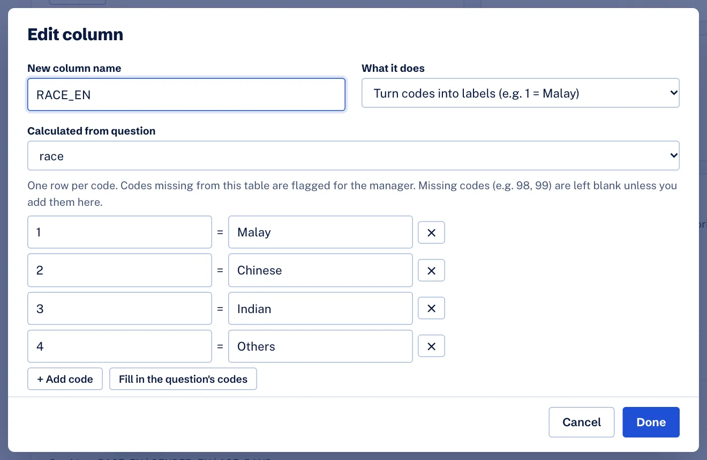
Malay. Fill in the question's codes lists the codes for you.Combine joins columns into one key. Example: SEGMENT = RACE_EN | GENDER_EN | AGE_BAND gives Malay|Female|18-29. It can only use columns listed above it. If a value has no band or label, the added column is left blank and the respondent is flagged in step 4.
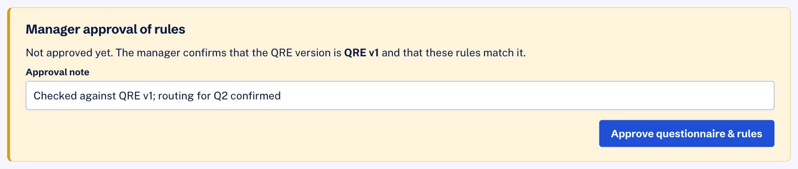
Changing any rule after approval cancels the approval. The manager approves again, then the cleaner re-runs the checks.
The order: ① the Cleaner runs the checks → ② the Manager decides each issue → ③ the Cleaner applies the decisions → ④ the Cleaner inspects every respondent.
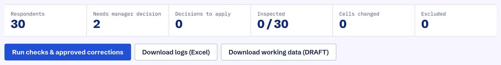
| Run checks & approved corrections | Checks every respondent against the approved rules. It first shows every cell the automatic corrections will change. Changes that look the same, e.g. 27 → 27, are numbers stored as text being turned into real numbers. |
| Re-run checks | Run them again, e.g. after the rules change. |
| Download logs (Excel) | All issues, decisions and changes so far. |
| Download working data (DRAFT) | The data as it is now. Not for reporting. |
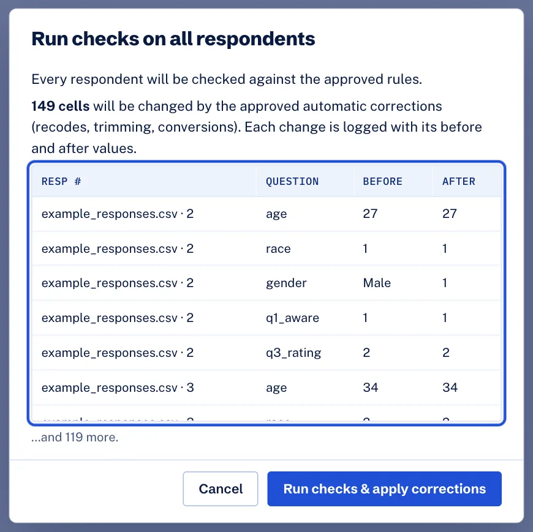
Male → 1, from the approved recode.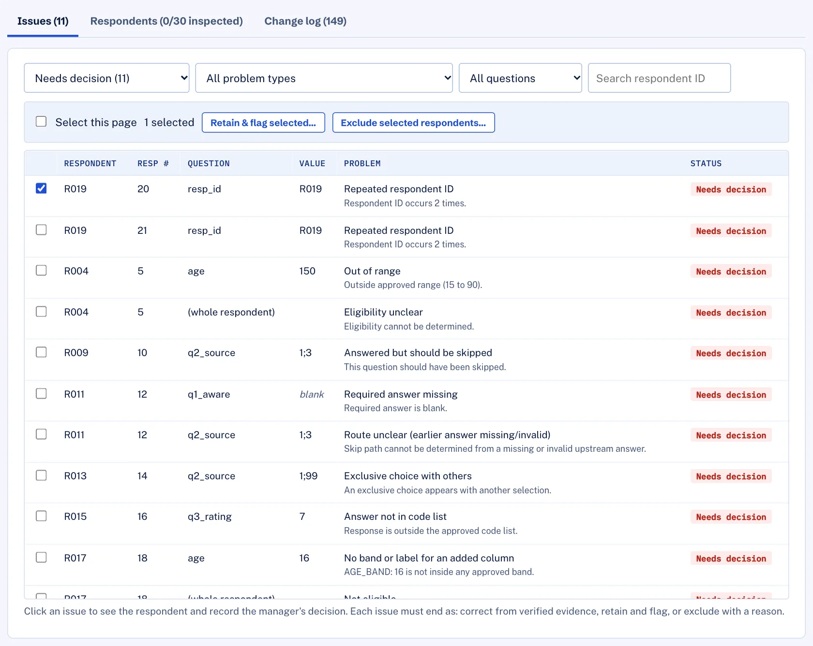
| Filters | Show issues by status, problem type or question, or search for a respondent ID. |
| Tick boxes + Retain & flag selected… / Exclude selected respondents… | Decide many similar issues at once. A reason is required. |
| Click a row | Opens the issue to decide it on its own. |
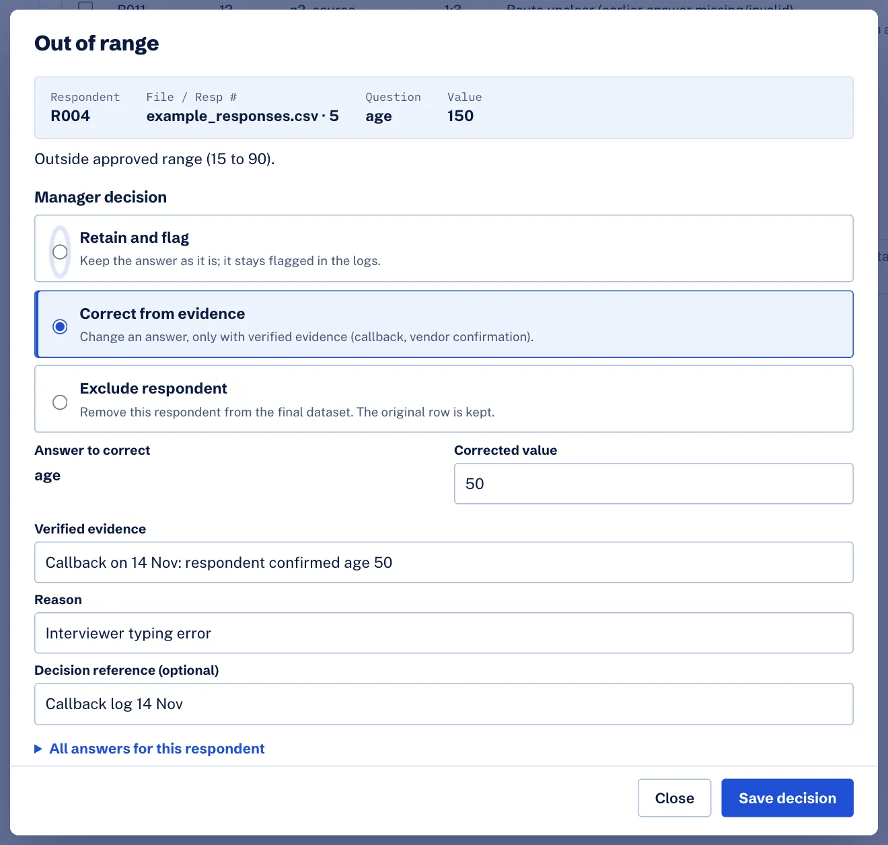
| Correct from evidence | Change an answer, only with proof, e.g. a callback or vendor confirmation. |
| Retain and flag | The answer is genuine, even if unusual. It stays as it is and is flagged in the logs. |
| Exclude respondent | Remove from the final data, e.g. a duplicate interview or someone under 18. The original row is kept in the logs. |
Click Apply … decisions. Corrections and exclusions are made, every change is logged, and the checks run again.
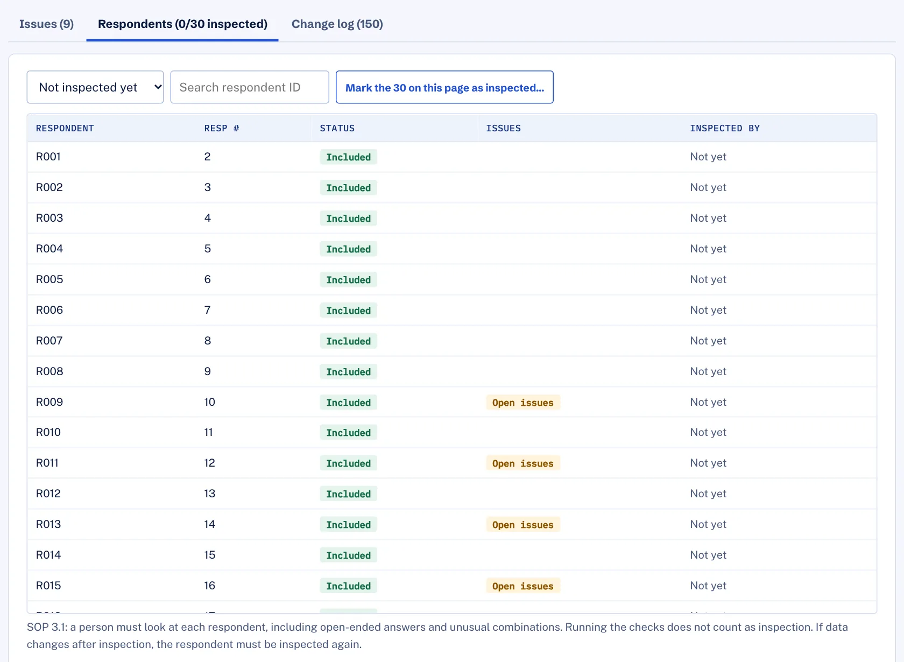
| Filter / Search | Show respondents not inspected yet, with open issues, excluded, inspected, or all. |
| Click a row | Opens all the answers for one respondent (below). |
| Mark the … on this page as inspected… | Use this after you have looked at every respondent on the page. You tick a box to confirm. |
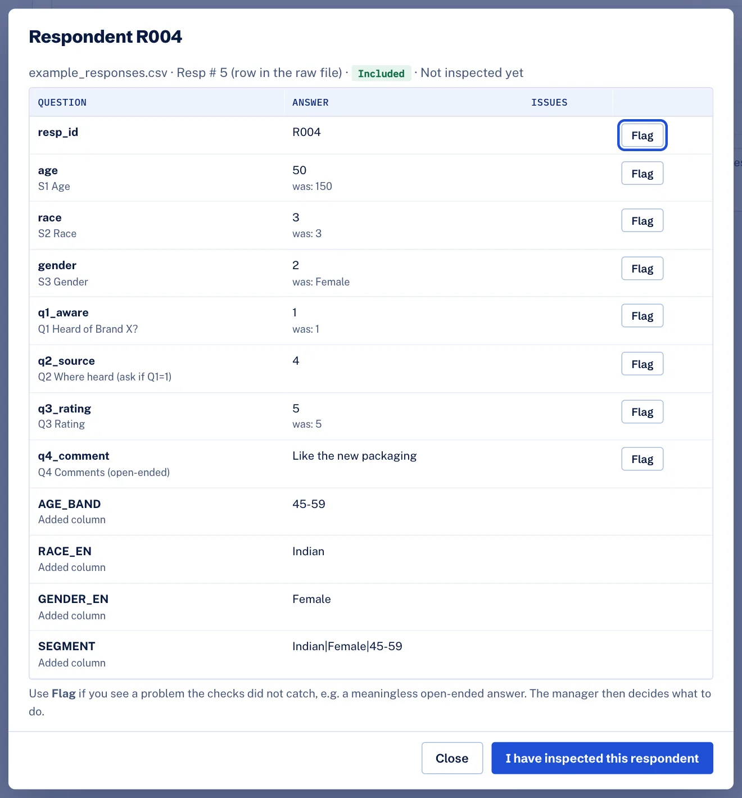
| Flag | Report a problem the checks missed, e.g. a meaningless open-ended answer like asdfgh. It goes to the manager as an issue. |
| I have inspected this respondent | Records that you looked at this respondent. If the data changes later, they must be inspected again. |
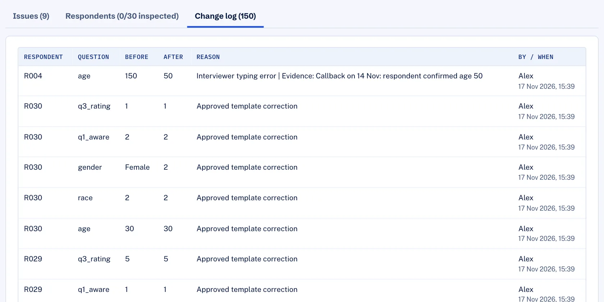
Every change, with its before and after values, the reason, who made it and when. Nothing changes without a record.
Step 4 is done when no issues need a decision and every respondent is inspected. The NEXT STEP banner then moves to step 5.
v001.